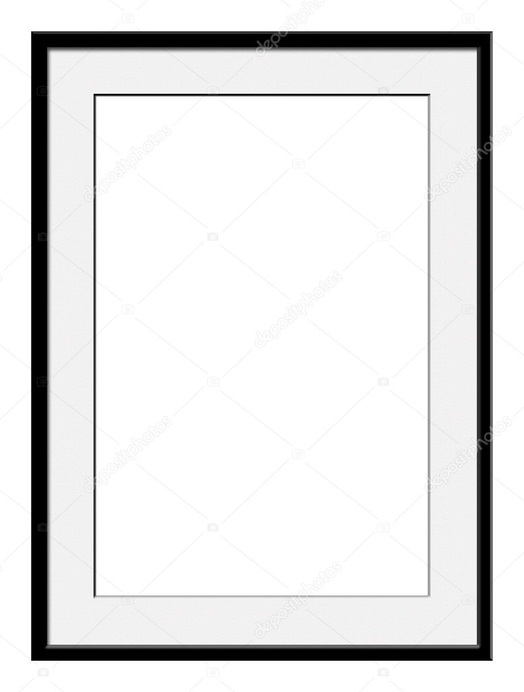
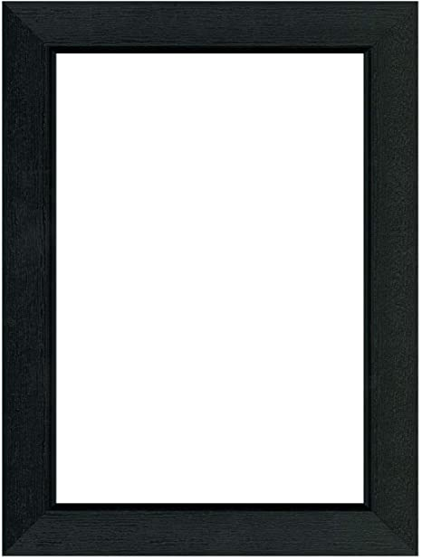
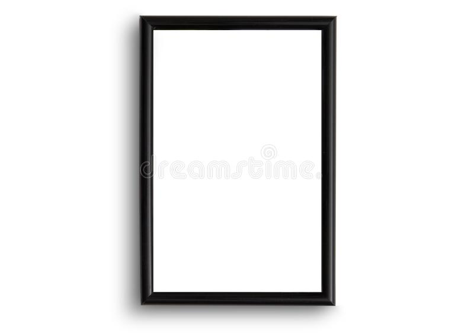

La extrusión reactiva permite llevar a cabo reacciones en ausencia de disolventes, o empleando una cantidad mínima de éstos en comparación con procesos tradicionales de polimerización por lotes, lo que supone un ahorro considerable tanto económico como de emisiones, resultando en un proceso más sostenible.
Actualmente se están desarrollando diferentes proyectos e iniciativas que persiguen procesos para la clasificación, deslaminado y reciclado con el objetivo de dar una salida a estos envases, como es el caso del proyecto Merlin, coordinado por el centro tecnológico Itene; o el proyecto conjunto del instituto tecnológico AIJU y la UPV, que han desarrollado y establecido un nuevo procedimiento de reciclaje mecánico para PET multicapa. Esta innovación permite la recuperación de los residuos mediante un proceso muy sencillo, evitando su deposición en vertederos y contribuyendo a fomentar la economía circular.
Esta técnica utiliza dióxido de carbono al someterlo a cierta temperatura y presión para que se convierta en un fluido supercrítico, es decir por encima de su punto crítico termodinámico, adquiriendo la propiedad de difundirse a través de los sólidos como un gas y de disolver los materiales como un líquido.
Esta nueva tecnología se sustenta en las formas clásicas de fabricación del plástico film, la extrusión de película soplada, que es uno de los métodos de procesamiento de polímeros más importantes. El proceso implica la extrusión de un plástico a través de un dado circular, seguido de una expansión similar a una burbuja. La masa fundida de plástico se extruye a través de un dado anular, normalmente vertical, para formar un tubo de pared delgada. El aire es introducido a través de un orificio en el centro del dado para soplar al tubo como un globo. Montado en la parte superior del dado, un anillo de aire de alta velocidad sopla sobre la película caliente para enfriarla. El tubo de película continúa hacia arriba, enfriándose continuamente, hasta que pasa a través de rodillos de presión donde el tubo es aplanado para crear lo que se conoce como un tubo plano de película. Este tubo plano o colapsado es entonces llevado de vuelta por la “torre” de la máquina extrusora de plástico a través de más rodillos.